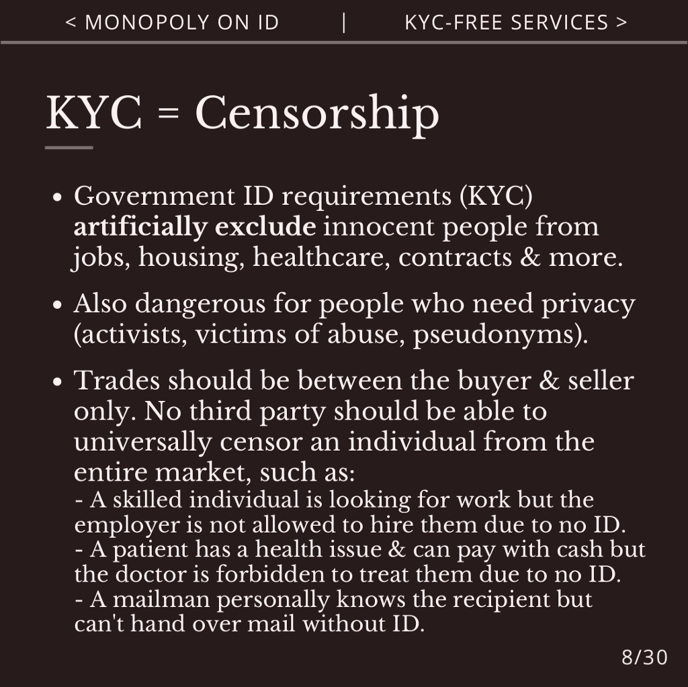

Crypto Agorism unites agorists and cryptocurrency users to build fair and free markets outside of the state, which provide necessities like food, jobs, housing, healthcare, sim cards, mail & more without censorship or surveillance.
Video: crypto-agorism.mp4
Subtitles: crypto-agorism.vtt
Slides: crypto-agorism.pdf
Mirror (Peertube): https://tube.tchncs.de/w/tPvohTaiocfg5LEsFjGqHN
Mirror (Odysee): https://odysee.com/@anarkio:a/crypto-agorism:0
Mirror (Youtube): https://youtube.com/watch?v=Qb1W2OvaBkU
Crypto Agorism.
Free markets for a free world.
This presentation introduces Crypto Agorism, what it is, and how it helps people today to survive outside of the state, and access services without censorship or surveillance. Important tools are cryptocurrencies, anonymous services and gray markets.
Agorism means fair and free markets that operate outside of the state. No company registration, ID or permits are required. Examples are under-the-table jobs, informal apartment rentals and anonymous sim cards.
Cryptocurrencies like Bitcoin and Monero are good tools for agorist markets. Unlike banking, no government ID or corporate permission is required. Just download a wallet, and you can send and receive money worldwide without censorship.
Crypto Agorism unites agorists and cryptocurrency users to build practical free markets.
Agorism focuses on small businesses, entrepreneurs and communities, not state-backed corporations.
Small businesses are more flexible, offer better, more individualized, service, and have a closer relationship between the buyer and seller.
Small businesses can also offer fairer pay and better working conditions, due to direct deals with the producers, and bypassing middlemen, profiteers and CEOs. An example is direct trade coffee vs. Nestle.
Agorism helps you to bypass the state’s monopolies on money, identity and markets, which attempt to censor and surveil the free market.
Fiat, such as the US dollar, is the state’s monopoly on money. The state can print more money limitlessly and manipulate the economy.
The state also forces government ID requirements onto banks, which excludes millions of people without ID and surveils the financial transactions of everyone else.
As the state is phasing out cash and planning to introduce gatekept and surveilled CBDCs, a free currency is necessary.
Cryptocurrencies are the answer. Crypto operates outside of the state. No country, corporation or individual controls the network or issuance.
No government ID or application is required. Simply download a wallet, and you are ready to earn, spend and save money worldwide.
Crypto transactions are pseudonymous, censorship-resistant, fast and have low fees.
This makes crypto perfect for online shopping, money transfers, fundraising and brick-and-mortar stores. Additionally you can withdraw crypto to physical cash, gift cards or gold.
The tyranny of digital ID already exists, due to the state’s monopoly on identity.
The state already refuses to print passports, national ID cards and birth certificates for approximately 1 billion people worldwide.
As more and more services require government ID, this shuts people out from necessities like jobs, apartments, healthcare, mail, sim cards and more.
Sadly there are no alternatives. Flag Theory requires an existing ID, Red Cross doesn’t print IDs, and non-government IDs aren’t accepted. If someone, for example, wasn’t registered at birth, there is no way for them to appeal or access ID in another way.

Government ID requirements, also known as KYC, have been excluding innocent people from jobs, housing, healthcare and more since decades.
Not only people who can’t get ID, but also people who need pseudonymity for safety reasons, such as activists and victims of abuse.
This artificial barrier to the economy is cruel, fatalistic and puts people in danger. No third party should be able to universally censor an individual from the entire market.
For example, if an employer likes an applicant’s skills and work ethic, they should be able to hire this person. In reality, government ID requirements prevent this applicant from finding work anywhere, despite their abilities and efforts. Likewise, if someone is ill, goes to the doctor and can pay in cash, they may be wrongly refused treatment due to no government ID.
In a free market, transactions are between the buyer and seller only. Trades are made on the basis of supply and demand, without censorship from external gatekeepers.
Government ID requirements are unethical, especially as the state refuses to print ID for millions of people. In comparison, agorism doesn’t require ID and is open to everyone.
Agorist KYC-free services don’t require government ID or state permission. This provides equal and meritocratic access to services, preserves privacy, and avoids state surveillance and censorship.
Some examples are under-the-table jobs, informal apartment rentals and anonymous health clinics.
Cryptocurrencies help people to earn money remotely, shop online and send international money transfers.
Anonymous sim cards and PO boxes help people to access the internet and receive mail without ID.
Proxy merchants are also useful. Some examples of proxy services include: A roommate deals with the rental contract on your behalf and you pay them in cash. A friend sends a bank transfer for you. A local store allows you to pickup mail there. A business registers sim cards under their company name and resells them anonymously.
There are many ways to establish trust or authorization without government ID, many of which are successfully used today.
Many transactions can be done anonymously, for example, buying food, clothes or electronics in a store. You only need to hand over the cash, and the product is yours. No name required.
PINs and passwords can help with authorization. One example is a password to login to a website, or a PIN sent by SMS or email to pick up a package.
Cryptographic key pairs are used for critical applications, such as PGP encryption and signing, for secure communication, and proving ownership of funds with Bitcoin. A pseudonymous key pair is enough to prove your identity or send money worldwide.
Online shopping and remote work can benefit from escrows, such as Bitcoin’s multisig. This enables refunds in the case of a scam. Cash deposits for rentals can protect against damages or theft.
Customer reviews can help you to find trusted products or businesses. Vouches, for example from friends, colleagues or landlords, and web of trust can help to trust individuals.
While personal IDs are a dangerous concept, non-government IDs from NGOs or companies are easier to access than the gatekept, single point of failure of government ID systems.
Next to the state monopoly on money and identity, is the monopoly on markets.
Via regulations, the state censors what can be sold, who can sell and for what price. The state excludes entire categories of products and groups of sellers from the economy, despite market demand for these services.
State regulations harm many people. They make it difficult to access medicine, affordable housing or even find a job.
High taxes make it difficult for regular people to afford food and rent, while the state immorally spends these funds on corporate bailouts, corruption and war.
In comparison, unregulated markets are open to everyone, without restrictions. These may be known as gray markets, parallel economies, circular economies or Second Realms.
Some examples are local cash-in-hand markets, online classifieds and darknet markets.
Opsec and risk management are important, but gray markets have operated successfully since decades, even in authoritarian countries, and provide customers with what they need, and are unable to get from gatekept state markets.
Many day-to-day necessities take place as market transactions. When you earn money from your job, pay rent for your apartment, buy food in a grocery store and pay for a gym membership: All these are market transactions between a buyer and a seller.
These market transactions take place in communities, such as with colleagues, neighbors, regular customers, friends or fellow fans of your hobby.
Local, global and online agorist communities can help buyers and sellers to meet each other and build a parallel economy free from state control.
Agorism doesn’t require mainstream adoption or integration with the statist white market. If you have one agorist employer, one agorist landlord and shop from one agorist grocery store, that’s enough. A network of like-minded people and a peer-to-peer free market can help people to find what they need.
(It matters less what 99% of statist businesses are doing, if you have access to 1% of agorist markets.)
There are many ways to participate in agorist markets.
The Gray Man strategy is when a white market business sells agorist services under-the-table to trusted customers. For example, a local phone repair store sells anonymous sim cards on request, or a hotel rents out rooms without ID to people in need, such as victims of abuse or undocumented people.
A Proxy Merchant offers their company as a proxy, so that people can access services anonymously. An example is a personal shopping service. A customer sends a link to a product and pays with crypto. The personal shopper buys the product with their bank account and ships it to the customer.
A Second Realm business exists entirely outside of the state, without a registered company, ID or permit. An example is remote freelance work for cryptocurrency, or selling refurbished laptops in Craigslist.
Peer-to-peer sales are one time sales, such as subletting your apartment for 1 month while you are traveling, or selling your old car for cash.
Agorist markets for food include farmers markets, local non-chain stores, crypto-friendly grocery stores and restaurants, and direct trade for imported products.
You can also grow your own food with a garden or homestead.
Encourage your favorite online and local stores to accept crypto, rather than only bank transfers or credit cards. Make sure you use a KYC-free provider, such as BTCPayServer.org, Oshi.tech, Bitejo.com or a mobile wallet, instead of a platform that requires government ID like Strike, Coinbase or Bitpay.
Agorist jobs include under-the-table jobs for cash and crypto, either as your main income or on the side.
Offer your services via word-of-mouth, Craigslist or crypto classifieds websites like Microlancer.io or FreelanceForCoins.com. You can exchange earned crypto to physical cash with Bisq.network, HodlHodl.com or Bitcoin ATMs.
If you need to hire someone, choose a freelancer or small business, not a corporation.
Proxy merchants can help by setting up a shell company, with which freelancers can make contracts, receive bank transfers, rent coworking spaces and receive mail.
Agorist housing includes apartment, hotel, land and office rentals for cash or crypto, without ID or address registration.
With a network of intentional communities such as city neighborhoods, trailer parks, homesteads or van living communities, agorists can live together and build local parallel economies.
Community spaces including cafes, hackerspaces and anarchist libraries provide a place for meetups, events and education.
Agorist healthcare includes anonymous health clinics with out-of-pocket payments or funded by donations, crypto-friendly doctors, online pharmacies and telemedicine services, and importing medicine from countries that don’t require prescriptions.
An agorist health insurance company could print health insurance cards without requiring government ID, as well as help people access healthcare for a monthly fee.
In addition, people are starting to synthesize medicine such as insulin, in home labs. Check Four Thieves Vinegar for more details.
Agorist logistics includes anonymous PO boxes and parcel lockers, a crypto-friendly alternative to Uber for taxis and deliveries, and dead drop services.
A dead drop is where a package is left at specified co-ordinates, and the sender and recipient never meet each other.
Additionally, a proxy merchant could rent an office and allow customers to pick up mail there.
Agorist communication includes anonymous sim cards, KYC-free home internet, public wifi networks and mesh networks.
In addition, use PGP and Matrix for encrypted chats, Tor for anonymous browsing, and Monero for private payments.
It isn’t a question of “Will Agorism Work?”
Agorism already provides necessary services to people, outside of state censorship and surveillance.
Sellers earn profits, save time, avoid bureaucracy and bypass censorship, and buyers can get what they need with cash or crypto.
There are many motivations for this, such as saving money and time, avoiding red tape, financial inclusion, privacy, safety, humanitarian or ideological reasons.
Gray markets work, have worked since decades, and will continue to work, wherever they are needed.
What can you do to get started with agorism?
Buy from small businesses and peer-to-peer markets, instead of state-backed corporations.
Encourage your favorite stores to accept crypto, or accept crypto in your business.
Don’t require government ID in your business and find services that don’t require ID.
Offer proxy merchant services, for example via a shell company.
Join online or local agorist groups to build practical parallel economies.
There are many resources, articles, podcasts, directories and tools to help you to learn more about agorism and build truly free markets.
“An Agorist Primer” by SEK3 and “Second Realm: Book on Strategy” by Smuggler & XYZ are practical books about agorism.
Check Anarplex, Bitcoin Magazine and Medium for agorist and crypto articles, like KYC-free Bitcoin circular economies.
Listen to practical podcasts for agorist ideas, crypto use cases and more, such as Vonu Podcast and Citadel Dispatch.
Trade products and services for crypto with Bitejo.com or MirageSale.com, or join a Matrix or Telegram group, for example Bitcoin P2P Marketplace in Telegram.
Find a list of KYC-free services at KYCNot.me. Use Tor for anonymity, Matrix for encrypted chats and Monero for private payments.
There are many agorist, crypto and privacy communities in Matrix, Telegram and other social networks, including Flote, Freedom Cells and Hack Liberty.
Free the markets, free the world.